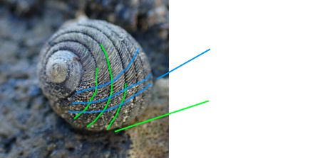

Black sea snail field guide
Use this guide to help with identification of New Zealand dilomas, but also other black sea snails

Thing to know to help with identificaiton!
Growth lines go across the shell
Spiral ridges go with the direction of the shell
3
.